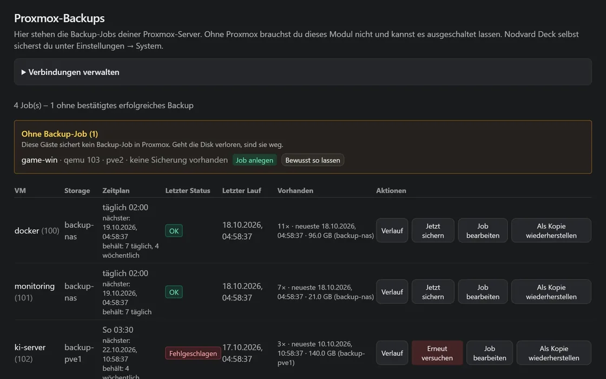
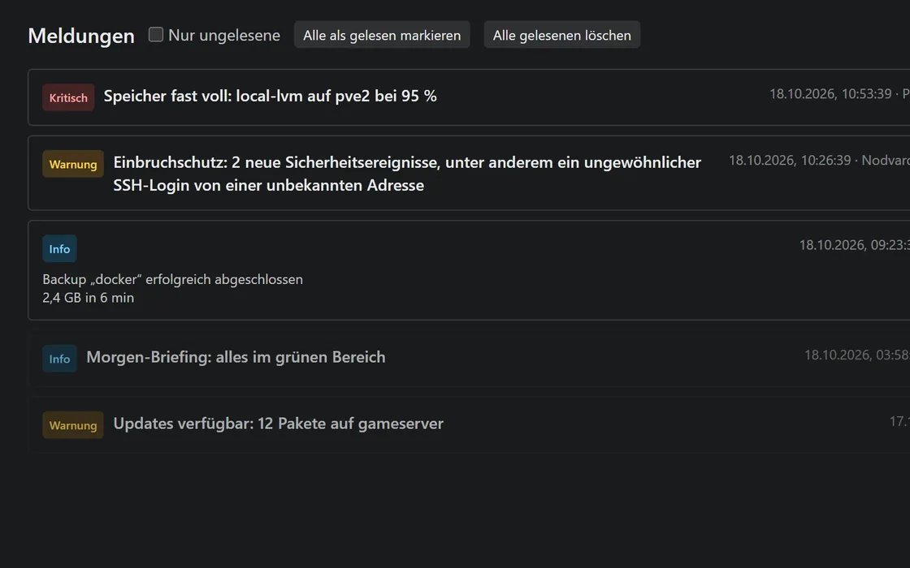
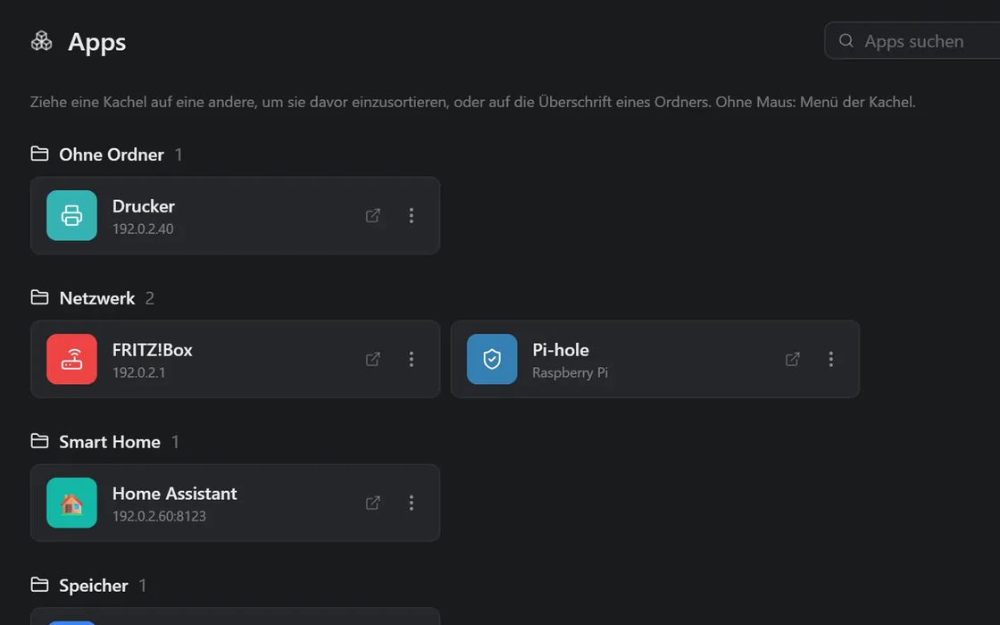

Ein Dashboard für dein ganzes Homelab.
Nodvard Deck zeigt dir, was auf deinen Servern los ist, von der Proxmox-VM bis zum einzelnen Container. Ob deine Backups gelaufen sind, siehst du da auch. Du installierst es selbst, und privat zahlst du nichts.
Nur mal reinschauen? Beispieldaten sind dabei. Die wirfst du später wieder raus.




Alle Ansichten mit Beispieldaten. Deck ist noch Beta und läuft mit Docker auf einem Raspberry Pi 4 oder 5 oder auf jedem x86-64-Rechner.
Was Nodvard Deck kann
Bevor Deck etwas an deinen Servern ändert, fragt es dich. Was es ohne Nachfrage erledigen darf, stellst du selbst ein.

Docker mit Stacks Neu
Hier siehst du die Container von all deinen Servern zusammen. Stacks bearbeitest du direkt in Deck, als Text oder im Formular. Und wenn dir ein Update nicht gefällt, gehst du zurück zur alten Version. Deine Stacks aus Portainer nimmst du einfach mit, die Volumes bleiben, wo sie sind.
Mehr zu Docker
Server und Proxmox
Jeder Server hat in Deck eine eigene Seite. Da steht, wie ausgelastet er ist, welche Dienste laufen und welche Updates offen sind. VMs und LXC auf Proxmox startest und stoppst du direkt hier, die Konsole gibt es im Browser. Ohne Proxmox geht es aber genauso.
Mehr zu Servern
Nodvard Shield
Shield schaut regelmäßig auf deine Linux-Server. Es sucht mit ClamAV nach Schadsoftware, prüft mit Lynis die Einstellungen und meldet SSH-Logins, die nicht nach dir aussehen. Funde landen ab Werk gleich in der Quarantäne, wo du sie jederzeit wieder rausholen kannst. Wenn du das nicht willst, schaltest du es ab.
Mehr zu ShieldBackups
Deck schaut nach, ob deine Proxmox-Backups gelaufen sind, und meldet sich, wenn eins fehlt oder schiefging.
Apps
Kacheln für deine Dienste, damit du dir keine Adressen mehr merken musst. Container mit Weboberfläche findet Deck selbst.
Integrationen
Uptime Kuma, Home Assistant, Plex, Jellyfin, Synology und noch ein paar mehr bekommen eine Kachel in Deck. Viele davon sind noch Beta.
Tresor
Passwörter, API-Tokens und SSH-Schlüssel speichert Deck verschlüsselt. Auf Wunsch bekommt jeder Server seinen eigenen Schlüssel.
Meldungen
Hier landet alles, was irgendwo nicht stimmt. Auf Wunsch kommt es auch aufs Handy, über ntfy, Telegram, Discord oder andere.
Freigaben und Konten
Mehrere Benutzer mit eigenen Rollen und Anmeldung mit Zwei-Faktor. Im Protokoll siehst du, wer wann was gemacht hat.
Grünes Lämpchen: fertig. Gelbes Lämpchen: noch Beta.
Nodvard Dock Beta
Du willst nur deine Container verwalten? Dann reicht Nodvard Dock. Das ist der Docker-Teil von Deck als eigenes, kleines Image. Wer gerade von Portainer CE weg will, ist da richtig. Dock gibt es seit Version 0.11.0.
In drei Befehlen installiert
Du brauchst nur einen Rechner mit Docker und Docker Compose. Bauen musst du nichts, das fertige Image kommt von GitHub.
mkdir ~/nodvard-deck && cd ~/nodvard-deck
curl -fsSL -o compose.yml https://raw.githubusercontent.com/nodvard/deck/main/deploy/compose.standalone.yml
docker compose up -dWas steht in der compose.yml?
Ein Container, ein Port, ein Volume für die Daten. Kein Docker-Socket, keine besonderen Rechte. Die vollständige Datei liegt auf GitHub.
name: nodvard-deck
services:
nodvard-deck:
image: ghcr.io/nodvard/deck:latest
restart: unless-stopped
ports:
- "${NODVARD_DECK_PORT:-8080}:8080"
volumes:
- nodvard_deck_data:/app/data
# Optional: Ordner für Sicherungen, etwa auf einem NAS
# - ./sicherungen:/backups
healthcheck: …
volumes:
nodvard_deck_data:
name: nodvard-deck-dataDanach öffnest du http://<dein-server>:8080 im Browser. Den Einrichtungscode findest du mit docker compose logs nodvard-deck. Zum Schluss fragt dich der Assistent, ob du dich erst mal mit Beispieldaten umsehen willst.
Privat kostenlos.
- Kein Konto bei Nodvard
- Kein Abo, keine Werbung
- Keine Telemetrie
- Kein Agent, nur SSH
- Rund 100 MB RAM im Leerlauf
Lizenz: PolyForm Noncommercial 1.0.0. Den Quellcode kann jeder lesen. Für die Nutzung in einer Firma frag bitte vorher nach. Die Lizenz in einfachen Worten
Fragen, Ideen, Fehler
Wenn du eine Frage hast, komm auf Discord. Fehler und Ideen kannst du als Issue auf GitHub anlegen. Ich nutze Deck selbst, bei mir läuft es rund um die Uhr im Homelab.
Zu jeder Version gibt es auf GitHub ein Änderungsprotokoll, und über 10.000 automatische Tests prüfen den Code. Eine Sicherheitslücke meldest du bitte vertraulich über die Sicherheits-Richtlinie.